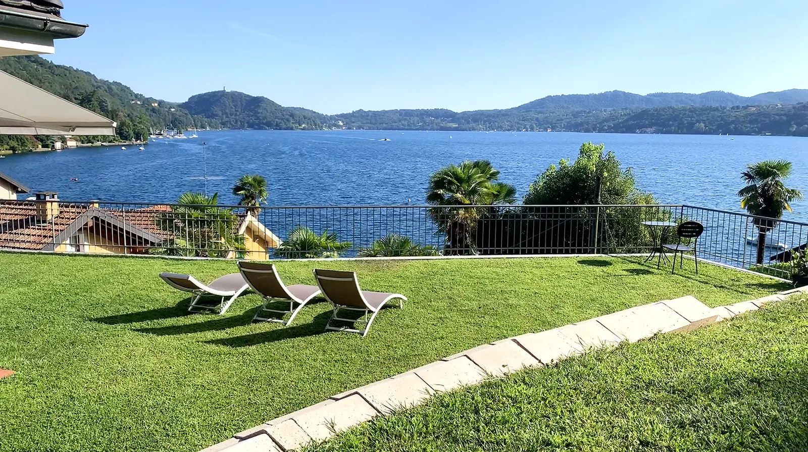

01

~50 m · 1 min walk
The adjacent four-room B&B
Villa Pinin
B&B · 4 roomsVia Fava 12
€80–€120per night
A pastel-toned house in a private garden, twenty metres from the lake, breakfast taken on the lake-view terrace.[3] The catch is plumbing — only one of the four rooms has a private en-suite; the others walk through the house to a shared bath, and two rooms share one bathroom.[3] For one or two travellers comfortable with that — unbeatable adjacency at the lowest price in this brief.